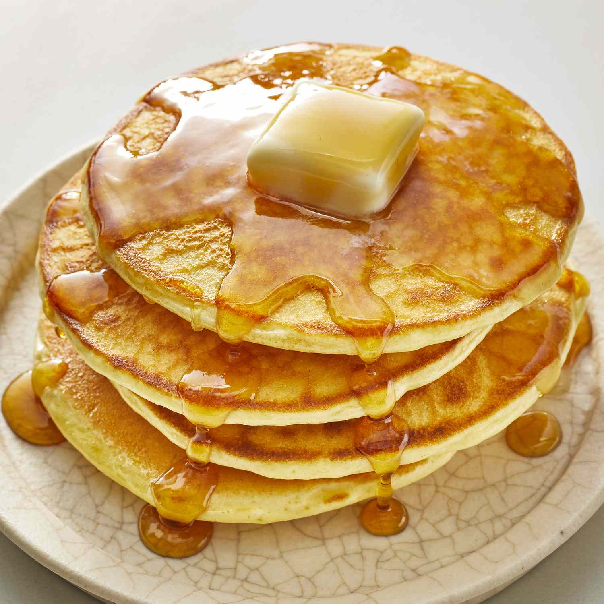

Pancakes

Description
- 1 cup all-purpose flour
- 2 tablespoons sugar
- 1 tablespoon baking powder
- 1/2 teaspoon salt
- 1 cup milk
- 1 large egg
- 2 tablespoons melted butter (plus more for cooking)
- 1 teaspoon vanilla extract (optional)
Steps
-
In a large bowl, whisk together the flour, sugar, baking powder, and
salt.
-
In a separate bowl, beat the egg, then add the milk, melted butter, and
vanilla extract (if using).
-
Pour the wet ingredients into the dry ingredients and stir until just
combined. Do not overmix; a few lumps are okay.
- Let the batter rest for 5–10 minutes.
-
Heat a non-stick skillet or griddle over medium heat and lightly grease
with butter or oil.
- Pour about 1/4 cup of batter onto the skillet for each pancake.
-
Cook until bubbles form on the surface and the edges look set, about 2–3
minutes.
-
Flip and cook for another 1–2 minutes until golden brown and cooked
through.
-
Remove from skillet and keep warm. Repeat with the remaining batter.
-
Serve warm with your favorite toppings like syrup, butter, fruit, or
whipped cream.
Home